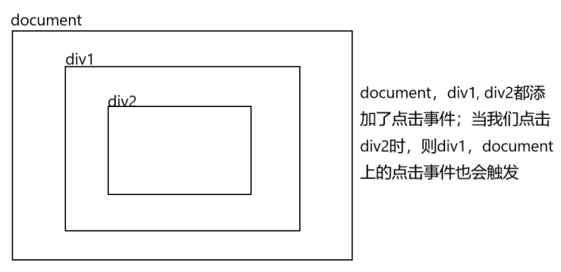

DOM操作
document对象
- document对象表示整个HTML 页面
- document.write()
- document.body.style.background = 'red'
获取页面标签元素的方法API
getElementById( )
var oDiv = document.getElementById("div1"); //通过id名获取一个元素节点对象，获取页面文档id=div1的元素var el = oDiv.getElementById("div2"); //获取oDiv元素下面 id=div2 的元素getElementsByTagName( )
x /*getElementsByTagName() 返回的是一个类似于数组的对象，里边包含了获取到元素*/ //通过标签名来获取元素节点对象 var op_arr =document.getElementsByTagName("p"); //获取页面所有的p标签 alert(op_arr.length); alert(op_arr[0].innerHTML); //获取对象的内容 alert(op_arr[1].innerHTML); alert(op_arr[2].innerHTML); alert(op_arr instanceof Array); //打印false 不是一个数组；getElementsByName( )
xxxxxxxxxx /*getElementsByName() 返回的是一个类似于数组的对象，里边包含了获取到元素*/ //获取带有指定名称的元素节点对象； var arr = document.getElementsByName("ok"); // 获取页面中所有 name="ok" 的元素 alert(arr.length); alert(arr[0].innerHTML); alert(arr[1].innerHTML);getElementsByClassName( )
xxxxxxxxxx /*getElementsByClassName() 返回的是一个类似于数组的对象，里边包含了获取到元素*/ document.getElementsByClassName("abc"); // 获取页面中所有 class="abc" 的元素 // PS：getElementsByClass 不兼容IE8以下querySelector && querySelectorAll
- querySelector 与 querySelectorAll小括号中，写css选择器，它们是通过css选择器来获取页面元素的
- querySelector 只会一个对象
- querySelectorAll 返回的是一个类似数组的对象
xxxxxxxxxx document.querySelector("p"); // 获取页面中第一p元素，如果页面中有多个p元素，也只会返回第一个 document.querySelectorAll(".cl p"); //获取页面中 class='cl'标签 下的p 标签，返回一个类似于数组的对象innerHTML 和 innerText属性
xxxxxxxxxx<div id="div1"> 我是一个div标签 <h1>我是一个h1标签</h1></div> //innerHTML //可以获取元素对象的内容var oDiv = document.getElementById("div1");alert(oDiv.innerHTML); //会把HTML标签也获取到；oDiv.innerHTML = "<p style='background:red'>我这一个p标签</p>" //会解析字符串中的html标签//innerText //获取文本内容 会把html标签过滤掉;alert(oDiv.innerText);oDiv.innerText = "<p style='background:red'>我这一个p标签</p>" //不会解析字符串中的html标签//PS：innerHTML会解析字符串中的html标签，innerText不会解析字符串中的html标签
属性操作
获取标签元素对象的标签名
xxxxxxxxxx// tagName 获取元素节点的标签名var oDiv = document.getElementById("div1");alert( oDiv.tagName ); //打印DIV标签元素的内容
xxxxxxxxxx// innerHTML 获取元素节点里的内容var oDiv = document.getElementById("div1");alert(oDiv.innerHTML);操作属性
xxxxxxxxxxvar oDiv = document.getElementById("div1");// 获取属性值alert(oDiv.id);alert(oDiv.title);// 设置属性值oDiv.id = "div2"; //id 不建议改动oDiv.title = "小明";// 加属性oDiv.an = "你好";oDiv.abc = "abc";oDiv.index = 2; //给oDiv元素对象添加index属性alert(oDiv.index); //可以打印值，但这样通过元素对象直接添加的属性，在页面标签中并不显示alert(oDiv.an);Attr方法
xxxxxxxxxx// getAttribute()方法 获取元素节点属性的值;var oDiv = document.getElementById("div1");alert(oDiv.getAttribute("title"));// setAttribute()方法 设置元素节点对象属性 setAttribute(属性名,属性值); 通过setAttribute方法设置的属性 需要通过getAttribute 来获取oDiv.setAttribute("abc","abc");alert(oDiv.abc); //打印undefinedalert(oDiv.getAttribute("abc")); //打印abc// removeAttribute()方法 //删除元素节点对象的属性oDiv.removeAttribute("abc");oDiv.removeAttribute("id");获取标签的class属性名
xxxxxxxxxx// 获取标签中的class属性值;var oDiv2 = document.getElementsByTagName("div")[1];alert(oDiv2.class); //打印undefined， 需要通过className获取 class名alert(oDiv2.className); //打印div2// 设置oDiv2.className = "div3";
表单元素操作
样式操作
获取样式值
xxxxxxxxxx<html lang="en"><head><meta charset="UTF-8"><title>Title</title><style>#div1{ background: red; }</style></head><body><div id="div1" style="width: 100px; height: 100px; font-size: 24px">11111</div><script>var oDiv = document.getElementById("div1");alert(oDiv.style); // [object CSSStyleDeclaration]var w = oDiv.style.width;alert(w); //100pxalert( oDiv.style.font-size ); //报错alert( oDiv.style.fontSize ); //打印24pxalert( oDiv.style["font-size"] ); //打印24pxalert( oDiv.style.background ); //打印一个空串// PS： 通过 元素对象.style 的方式 只能获取行内样式，不能获取内部样式表 ， 外部样式</script></body></html>设置样式值
xxxxxxxxxx// 设置样式属性值oDiv.style.background = "blue";oDiv.style.backgroundColor = "green";//PS：通过 元素对象.style 的方式 添加的样式，都是行内样式， 会把样式直接添加到标签上获取样式完整写法
xxxxxxxxxx// 定义一人函数，接收两个参数，第一个参数表示标签元素对象，第二个参数是要元素对象的属性function getStyle(obj,attr){// currentStyle，getComputedStyle可以获取到内部样式 和 外部样式if(obj.currentStyle){return obj.currentStyle[attr]; //兼容IE8以下}else{return window.getComputedStyle(obj,null)[attr]; //除了IE8外的其它浏览器}}//使用var oDiv = document.getElementById("div1");getStyle(oDiv, 'background')
node节点简介
加载HTML页面时，Web浏览器生成一个树型结构，用来表示页面内部结构。DOM将这种树型结构理解为由节点组成 （节点树）

节点的类型有12种，比如：元素节点，属性节点，文本节点 等等
xxxxxxxxxx/* Node对象 节点对象都有三个属性：nodeName，nodeType，nodeValue; 元素节点 nodeName=元素名 nodeType=1 nodeValue=null 属性节点 nodeName=属性名 nodeType=2 nodeValue=属性值 文本节点 nodeName=#text nodeType=3 nodeValue=文本内容*/<div id="div1">这里是一个div</div>// 这里的div则就是一个元素节点，标签中的id属性则为属性节点，而里边的文本就是一个文本节点节点操作的方法
firstChild 和 lastChild方法
xxxxxxxxxx<ul id="list">654764575 <li>1111111111</li> <li>2222222222</li> <li>3333333333</li> <li>4444444444</li> <li>5555555555</li></ul>// firstChild方法 获取当前元素节点的第一个子节点var oList = document.getElementById("list");var first = oList.firstChild;alert(first.nodeValue);var first = oList.firstElementChild; //在IE下不兼容var first = oList.firstChild; //只兼容IE8下以;var first = oList.firstElementChild || oList.firstChild; //获取第一个元素子节点 兼容;first.style.background = "red";alert(first.innerHTML);// lastChild 获取当前元素节点的最后一个子节点var last = oList.lastElementChild || oList.lastChild; // 获取第一个元素子节点 兼容;last.style.background = "red";previousSibling 和 nextSibling方法
xxxxxxxxxx<ul id="list"> <li>1111111111</li> <li>2222222222</li> <li id="li1">3333333333</li> <li>4444444444</li> <li>5555555555</li></ul>// previousSibling 获取当前节点的前一个同级节点var oLi1 = document.getElementById("li1");var oLi1_pre = oLi1.previousSibling;var oLi1_pre = oLi1.previousElementSibling;var oLi1_pre = oLi1.previousElementSibling || oLi1.previousSibling; //兼容 获取当前节点的前一个元素节点oLi1_pre.style.background = "red";// nextSibling 获取当前节点的后一个同级节点var oLi1_next = oLi1.nextElementSibling || oLi1.nextSibling; //兼容 获取当前节点的后一个元素节点oLi1_next.style.background = "red";childNodes方法
xxxxxxxxxx<ul id="list"> <li>1111111111</li> <li>2222222222</li> <li>3333333333</li> <li>4444444444</li> <li>5555555555</li></ul>// childNodes 获取当前元素节点的所有子节点var oList = document.getElementById("list");var oList_node = oList.childNodes;alert(oList_node.length); //打印11var oList_element = oList.children; //获取当前元素节点下的所有元素子节点；alert(oList_element.length);attributes属性
xxxxxxxxxx<ul id="list" title="小明"> <li>111111111</li> <li id="li1">222222222</li> <li>333333333</li> <li>444444444</li> <li>555555555</li></ul>// attributes 获取当前元素节点的所有属性节点集合var oUl = document.getElementById("list");var arr = oUl.attributes;alert(arr.length);alert(arr[0].nodeType);alert(arr[1].nodeValue);alert(arr[1].nodeName);parentNode属性
xxxxxxxxxx<ul id="list"> <li>111111111</li> <li id="li1">222222222</li> <li>333333333</li> <li>444444444</li> <li>555555555</li></ul>//parentNode属性 获取当前节点的父节点var oLi1 = document.getElementById("li1");var oUl = oLi1.parentNode;alert(oUl);alert(oUl.nodeName);createElement方法
xxxxxxxxxx// createElement() 创建一个元素节var oLi = document.createElement("li");oLi.style.background = "red"; // 给创建的li元素 添加样式console.log(oLi);appendChild方法
xxxxxxxxxx<ul id="list"> <li>111111111</li> <li id="li1">222222222</li> <li>333333333</li> <li>444444444</li> <li>555555555</li></ul>// appendChild() 将新节点追加到子节点列表的末尾var oList = document.getElementById("list");var obj = document.createElement("li"); //创建一个新节点obj.innerHTML = "我是创建一个新的li";obj.style.background = "red";oList.appendChild(obj); //把创建一个新节点添加到UL中;removeChild方法
xxxxxxxxxx<ul id="list"> <li>111111111</li> <li id="li1">222222222</li> <li>333333333</li> <li>444444444</li> <li>555555555</li></ul>// removeChild() 移除节点 var oLi1 = document.getElementById("li1");oLi1.parentNode.removeChild(oLi1); //父节点.removeChild(要移除的子节点) replaceChild方法
xxxxxxxxxx<ul id="list"> <li>111111111</li> <li id="li1">222222222</li> <li>333333333</li> <li>444444444</li> <li>555555555</li></ul>// replaceChild() 将新节点替换旧节点var obj = document.createElement("li");obj.innerHTML = "我是一个新创建的li";obj.style.background = "red";var oLi1 = document.getElementById("li1");oLi1.parentNode.replaceChild(obj,oLi1); //父节点.replaceChild(要替换的旧的子节点，新节点)insertBefore方法
xxxxxxxxxx<ul id="list"> <li>111111111</li> <li id="li1">222222222</li> <li>333333333</li> <li>444444444</li> <li>555555555</li></ul>// insertBefore() 将新节点插入在前面var obj = document.createElement("li");obj.innerHTML = "我是一个新创建的li";obj.style.background = "red";var oLi1 = document.getElementById("li1");oLi1.parentNode.insertBefore(obj,oLi1); //父节点.insertBefore(要插入的节点，指定的节点);// 下面这行代码可以让新元素 插入到 目标元素之后oLi1.parentNode.insertBefore( oLi1.nextSibling , oLi1);cloneNode方法
xxxxxxxxxx<ul id="list"> <li>111111111</li> <li id="li1">222222222</li> <li>333333333</li> <li>444444444</li> <li>555555555</li></ul>// cloneNode() 复制节点var oLi1 = document.getElementById("li1");oLi1.style.background = "red";oLi1.onclick = function(){ //添加事件 alert("1111111");}var obj = oLi1.cloneNode(true); //复制元素节点alert(obj == oLi1); var oList = document.getElementById("list"); oList.appendChild(obj); // cloneNode复制 只能复制节点的内容，样式；但是不能复制节点上事件write方法方法
xxxxxxxxxx// write() 这个方法可以把任意字符串插入到文档中var str = "小明<br />"var str1 = "<h1>好帅</h1>";document.write(str);document.write(str1);元素大小与位置
clientWidht 和 clientHeight方法
xxxxxxxxxx<style type="text/css"> #div1{ width: 100px; height: 100px; background: red; /*padding: 10px;*/ /*如果有内边距，clientWidht的值就是原来的大小加上内边中的大小*/ /*margin: 10px; */ /*加上外边距，值不变*/ /*border: 10px solid darkolivegreen;*/ /*加上边框，值不变*/ overflow: auto; /*如果有滚动想知条，clientWidht的值就是原来的大小减去滚动条的大小*/ }</style><div id="div1"> 1111111111111111111111<br/> 1111111111111111111111<br/> 1111111111111111111111<br/> 1111111111111111111111<br/> 1111111111111111111111<br/> 1111111111111111111111<br/> 1111111111111111111111<br/> 1111111111111111111111<br/> 1111111111111111111111<br/> 1111111111111111111111<br/> </div>//clientWidht与clientHeight 这两属性可以获取元素可视区的大小，它会加上内边距大小var oDiv = document.getElementById("div1");alert(oDiv.clientWidth);alert(oDiv.clientHeight);var num = document.body.clientWidth;// 获取当前页面可视大小(做兼容处理)var num = document.documentElement.clientWidth || document.body.clientWidth;var num = document.documentElement.clientHeight || document.body.clientHeight;alert(num);offsetHeight 和 offsetWidth方法
xxxxxxxxxx#div1{ width: 100px; height: 100px; background: red; /*padding: 10px;*/ /*overflow: auto;*/ /*border: 10px solid black;*/ /*margin: 10px;*/ /*值不变*/} <div id="div1"> 111111111111111111111111<br/> 111111111111111111111111<br/> 111111111111111111111111<br/> 111111111111111111111111<br/> 111111111111111111111111<br/> 111111111111111111111111<br/> 111111111111111111111111<br/> 111111111111111111111111<br/> 111111111111111111111111<br/> 111111111111111111111111<br/> 111111111111111111111111<br/> 111111111111111111111111<br/></div>// offsetHeight 与 offsetWidth 获取元素的实际大小 它会包括边框，滚动条和内边距;var oDiv = document.getElementById("div1");alert(oDiv.offsetHeight);alert(oDiv.offsetWidth);clientLeft 和 clientTop属性
xxxxxxxxxx#div1{ width: 100px; height: 100px; background: red; border-left: 50px solid black; border-top: 30px solid black}<div id="div1"></div>// clientLeft 与 clientTop 这组属性可以获取元素设置了左边框和上边框的大小。var oDiv = document.getElementById("div1");alert(oDiv.clientLeft); //获取元素对象的左边框的大小alert(oDiv.clientTop); //获取元素对象的上边框的大小alert(oDiv.clientRight); //undefined;offsetLeft 与 offsetTop属性
xxxxxxxxxx#div1{ width: 500px; height: 500px; background: red; position: relative; margin: 1px; /*如果有外边距，就是加上外边距的距离*/ /*padding: 50px;*/ /*不变*/ /*border: 10px solid black;*/ left: 500px;}#div2{ width: 100px; height: 100px; background: green; position: absolute; left: 200px; top: 200px;}<div id="div1"> <div id="div2"></div></div> //offsetLeft 与 offsetTop 获取元素对象的左边距与上边距 var oDiv = document.getElementById("div1");console.log(oDiv.offsetLeft); // 509console.log(oDiv.offsetTop); // 8var oDiv2 = document.getElementById("div2"); // ps获取的值是相对于定位父级元素;console.log(oDiv2.offsetLeft); // 200console.log(oDiv2.offsetTop); // 200滚动条相关操作
xxxxxxxxxx#div1{ width: 100px; height: 300px; background: red; overflow: auto;} <input id="btn" type="button" value="确定" /><div id="div1"> 11111111111111111111<br/> 11111111111111111111<br/> 11111111111111111111<br/> 11111111111111111111<br/> 11111111111111111111<br/> 11111111111111111111<br/> 11111111111111111111<br/> 11111111111111111111<br/> 11111111111111111111<br/> 11111111111111111111<br/> 11111111111111111111<br/> 11111111111111111111<br/> 11111111111111111111<br/> 11111111111111111111<br/> 11111111111111111111<br/> 11111111111111111111<br/> 11111111111111111111<br/> 11111111111111111111<br/> 11111111111111111111<br/> 11111111111111111111<br/> 11111111111111111111<br/> 11111111111111111111<br/> 11111111111111111111<br/> 11111111111111111111<br/> 11111111111111111111<br/> 11111111111111111111<br/> 11111111111111111111<br/></div>// scrollHeight：在没有滚动条的情况下，元素内容的总高度。// scrollWidth：在没有滚动条的情况下，元素内容的总宽度。// scrollLeft：被隐藏在内容区域左侧的像素数。通过设置这个属性可以改变元素的滚动位置。// scrollTop：被隐藏在内容区域上方的像素数。通过设置这个属性可以改变元素的滚动位置。 var oDiv = document.getElementById("div1");var oBtn = document.getElementById("btn");oBtn.onclick = function(){ alert(oDiv.scrollTop); alert(oDiv.scrollLeft); alert(oDiv.scrollHeight);}scrollIntoView方法
xxxxxxxxxx<button id="btn">点击跳转</button><br><br><br><br><br><br><br><br><br><br><br><br><br><br><br><br><br><br><br><br><br><br><br><br><br><br><br><br><br><br><br><br><br><br><br><br><br><br><br><br><br><br><br><br><br><br><br><br><br><br><br><br><br><br><br><br><br><br><br><br><br><br><br><br><br><br><br><br><br><br><br><br><br><br><br><br><br><br><br><br><br><br><br><br><br><br><br><br><br><br><br><br><br><br><br><br><br><br><br><br><div id="div1">我是一个div标签</div><br><br><br><br><br><br><br><br><br><br><br><br><br><br><br><br><br><br><br><br><br><br><br><br><br><br><br><br><br><br><br><br><br><br><br><br><br><br><br><br><br><br><br><br><br><br><br><br><br><br><br><br><br><br><br><br><br><br><br><br><br><br><br><br><br><br><br><br><br><br><br><br><br><br><br><br><br><br><br><br><br><br><br><br><br><br><br><br><br><br><br><br><br><br><br><br><br><br><br><br> // scrollIntoView方法；作用可以在滚动条定位到指定的元素位置var oBtn = document.getElementById("btn");var oDiv = document.getElementById("div1");oBtn.onclick = function(){ oDiv.scrollIntoView();}事件操作
事件流
事件流是描述的从页面接受事件的顺序，比如给几个层叠在一起的元素添加点击事件，当点击最里层的元素时，事件流是描述的从页面接受事件的顺序，比如给几个层叠在一起的元素添加点击事件，当点击最里层的元素时，而是层叠在点击范围内的所有元素都会触发事件
事件流包括两种模式：事件冒泡（即事件从中心往外触发） 和 事件捕获（即事件从外面往中心触发）。
图解

事件冒泡(阻止冒泡)
xxxxxxxxxx<html><head> <meta charset="UTF-8"> <meta name="description" content=""> <meta name="keywords" content=""> <title>Examples</title> <style type="text/css"> #div1 { width: 500px; height: 500px; background: red; position: relative; } #div2 { width: 100px; height: 100px; background: blue; position: absolute; top: 150px; left: 150px; } </style></head><body> <div id="div1"> <div id="div2"></div> </div> <script type="text/javascript"> var oDiv1 = document.getElementById("div1"); var oDiv2 = document.getElementById("div2"); oDiv1.onclick = function () { alert("div1点击事件触发"); }; oDiv2.onclick = function (ev) { alert("div2点击事件触发"); // 阻止事件捕获或冒泡行为 var oEvent = ev || event; if (oEvent.stopPropagation) { oEvent.stopPropagation() //兼容其它浏览器 } else { oEvent.cancelBubble = true //兼容IE } } </script></body></html>事件处理程序
- 事件就是用户或浏览器自身执行的某种动作。诸如click、load 和mouseover，都是事件的名字。而响应某个事件的函数就叫做事件处理程序（或事件侦听器）。事件处理程序的名字以"on"开头，因此click 事件的事件处理程序就是onclick
- 为事件指定处理程序的方式有好几种：HTML事件处理程序，DOM0 级事件处理程序，事件绑定
HTML事件处理程序
xxxxxxxxxx指定HTML事件处理程序，即就是在标签中直接添加事件<h1 onclick="alert('OK')">h1标签</h1>还可以这样<h1 onclick="showTime(this, '小明', 12)">h1标签</h1> 点击h1会触发showTime函数，this表示当前点击的h1元素<script type="text/javascript"> function showTime(el, username, age) { console.log(el, username, age); }</script>DOM0 级事件处理程序
xxxxxxxxxx<h1 id="hh">h1标签</h1>//指定DOM0级事件处理程序，即通过DOM标签元素对象添加事件<script type="text/javascript"> var elObj = document.getElementById("hh"); //获取h1标签元素对象 elObj.onclick = function () { //给h1标签元素对象添加事件 alert("你点击了h1标签") }; //删除事件 elObj.onclick = null; //删除事件处理程序</script>//还可以这样这样<script type="text/javascript"> var elObj = document.getElementById("hh"); //获取h1标签元素对象 elObj.onclick = showTime; //给h1标签元素对象添加事件 function showTime = function(){ alert("你点击了h1标签") }</script>事件绑定
绑定两个相同的事件
xxxxxxxxxx/*1. 通过事件绑定可以一个元素添加多个相同的事件，比如给一个div添加两个onclick事件，且两个点击事件都会生效2. 通过事件绑定我们可以设置事件流，是事件冒泡，还是事件捕获3. 绑定时用于处理添加和删除事件处理程序的操作：addEventListener("去掉on的事件名", 事件处理程序的函数, 布尔值) 和 removeEventListener()4. addEventListener的第三个参数布尔值，false表示事件冒泡流，true表示事件捕获流5. 在取消事件绑定时，removeEventListener()里的参数需要与绑定时addEventListener()中的参数保持一致6. addEventListener，removeEventListener在IE8以下不兼容7. 在IE8以下绑定和取消事件的方法分别是：attachEvent()，detachEvent()*/<h1 id="hh">h1标签</h1><script type="text/javascript">//通过事件绑定可以一个元素添加多个相同的事件，比如给一个div添加两个onclick事件，且两个点击事件都会生效var elObj = document.getElementById("hh");elObj.addEventListener('click', function () { // 给h1绑定一个点击事件console.log("绑定的第1个click事件");}, false)elObj.addEventListener('click', function () {console.log("绑定的第2个click事件");}, false)</script>取消绑定事件（失败写法）
xxxxxxxxxx<h1 id="hh">h1标签</h1><script type="text/javascript">var elObj = document.getElementById("hh");elObj.addEventListener('click', function () { //绑定一个点击事件console.log("绑定的第1个click事件");}, false)elObj.removeEventListener('click', function () { //取消绑定的事件console.log(1111111);}, false);//Ps: 这里事件取消会失败，因为在取消事件绑定时，removeEventListener()里的参数需要与绑定时addEventListener()中的参数保持一致，// 而这里的第二参数很明显是两个独立的函数</script>取消绑定事件（失败写法）
xxxxxxxxxx<h1 id="hh">h1标签</h1><script type="text/javascript">function showTime = function(){console.log(1111111);}var elObj = document.getElementById("hh");elObj.addEventListener('click', showTime, false); //绑定一个点击事件elObj.removeEventListener('click', showTime, false); //取消绑定的事件//PS: 这里取消绑定会成功，因为所有的参数都一样了</script>事件绑定IE8兼容写法
xxxxxxxxxx<h1 id="hh">h1标签</h1><script type="text/javascript">var elObj = document.getElementById("hh");function showTime() { console.log(11); }//事件绑定if(elObj.addEventListener){elObj.addEventListener('click',showTime,false);}else{elObj.attachEvent("onclick",showTime); // IE8以下的兼容处理}//取消事件绑定if(elObj.removeEventListener){elObj.removeEventListener('click',showTime,false);}else{elObj.detachEvent("onclick",showTime); // IE8以下的兼容处理}</script>事件绑定最后封装
xxxxxxxxxx//obj 表示要绑定的事件的对象，//type 表示要绑定的事件类型//fin 表示事件触发要执行的函数function addEvent(obj,type,fin){if(obj.addEventListener){obj.addEventListener(type,fin,false);}else{//IE8以下的兼容处理obj.attachEvent("on"+type,fin);}}//事件移除;function removeEvent(obj,type,fin){if(obj.removeEventListener){obj.removeEventListener(type,fin,false);}else{obj.detachEvent("on"+type,fin);}}function showTime = function(){console.log(111);}addEvent(elObj, 'click', showTime) //给elObj元素对象绑定 点击事件removeEvent(elObj, 'click', showTime) //取消elObj元素对象的 点击事件
事件处理程序的函数中的this
xxxxxxxxxx/* 事件处理程序的函数中的this，表示的是当前触发这个事件的那个元素对象*/<h1 id="hh">h1标签</h1><script type="text/javascript"> var elObj = document.getElementById("hh"); function showTime(){ console.log(this); } //当点击h1元素触发点击事件时，这里执行的this就是我们点击的h1元素 elObj.onclick = showTime;</script>事件对象
我们在DOM页面中触发一个事件时，都有默认产生一个事件对象event
这个事件对象中包含着所有与事件有关的信息，比如：事件类型，触发事件DOM元素
事件对象中常见属性：
事件对象属性 属性描述 target 事件的目标；页面中实际操作的那个DOM元素 currentTarget 其事件处理程序当前正在处理事件的那个元素；添加事件的那个DOM元素，相当事件处理程序函数中的this clientY 在鼠标事件中，它表示当前鼠标在可视窗口中的纵坐标，这与是否有滚动区域视图无关，重点是可视窗口 clientX clientX 与 clientY一样，但它表示的是横坐标 pageY 在鼠标事件中，它表示当前鼠标在窗口中的纵坐标，如果有滚动区域视图，则需要算上滚动区域视图 pageX pageX 与 pageY一样，但它表示的是横坐标 stopPropagation( ) 可能阻止事件冒泡或者捕获，但在IE中兼容性不好，可以event.cancelBubble = true做兼容IE处理 preventDefault( ) 阻止事件的默认行为，例如可以在onsubmit事件中，通过event.preventDefault( )阻止表单的默认提交行为，但是IE8以下是不兼容的，但可以通过return false来阻止表单的默认提交行为 type 被触发的事件的类型 阻止表单默认提交行为
xxxxxxxxxx<form action="https://www.360.com" id="form2"><input type="submit"></form><script>var elForm = document.getElementById("form2");elForm.onsubmit = function (ev) { //给表单添加onsubmit事件，当表单提交时触发执行var ev = ev || event;console.log(11);// ev.preventDefault(); IE8以下不兼容return false; // 返回false可以阻止表单的默认提交行为}</script>
事件委托
使用事件委托可以让 整个页面占用的内存空间更少，能够提升整体性能。
使用事件委托可以让 页面中设置事件处理程序所需的时间更少。因为添加一个事件处理程序所需的DOM 引用更少，所以花的时间也更少。
不使用事件委托的案例
xxxxxxxxxx<ul id="ulList"><li>第1个li</li><li>第2个li</li><li>第3个li</li></ul><script>/* 当前点击每一个li标签时，就在控制台打印点击的li的内容 */var elUl = document.getElementById("ulList");var elLis = elUl.getElementsByTagName("li");for (var i in elLis) { //遍历所有li元素对象，给每一个li添加点击事件elLis[i].onclick = function () {console.log(this.innerText) //打印当前点击的li的内容}}</script>使用事件委托的案例
xxxxxxxxxx<ul id="ulList"><li>第1个li</li><li>第2个li</li><li>第3个li</li></ul><script>var elUl = document.getElementById("ulList");//给ul添加点击事件，因为事件冒泡，当我们点击li时，所以这里ul上的点击事件也会被执行elUl.onclick = function(ev){var ev = ev || event;console.log(ev.target.innerText); // 这里的ev.target表示是 我们在页面中实际点击的那个标签元素}</script>事件委托小案例
xxxxxxxxxx<ul id="ulList"><li id="redLi">第1个li</li><li id="blueLi">第2个li</li><li id="greenLi">第3个li</li></ul><script>/*需求：点击第1个li时，页面变红色；点击第2个li时，页面变蓝色；点击第3个li时，页面变绿色；*/var elUl = document.getElementById("ulList");elUl.onclick = function(ev){var ev = ev || event;switch (ev.target.id) {case 'redLi':document.body.style.background = 'red';break;case 'blueLi':document.body.style.background = 'blue';break;case 'greenLi':document.body.style.background = 'green';break;}}//PS：这里其实主要通过li标签中id属性，来判断点击的哪一个Li</script>
事件类型
鼠标事件
事件名 描述 onclick 单击鼠标左键按钮时触发 ondblclick 双击后触发； onmousedown 按下鼠标左键 但还没有弹起时触发 onmouseup 按下鼠标左键 并且抬起后触发 onmousemove 按住鼠标左键移动时触发 onmouseover 鼠标移入进时触发（会事件冒泡） onmouseout 鼠标移出时触发（会事件冒泡） onmouseenter 鼠标移入进时触发（不会事件冒泡） onmouseleave 鼠标移出时触发（不会事件冒泡） 焦点事件
事件名 描述 onblur 在元素失去焦点时触发。这个事件不会冒泡；所有浏览器都支持它 onfocus 在元素获得焦点时触发。这个事件不会冒泡；所有浏览器都支持它 onfocusout 在元素失去焦点时触发。这个事件与HTML 事件blur 等价，但它冒泡 onfocusin 在元素获得焦点时触发。这个事件与HTML 事件focus 等价，但它冒泡 html事件
事件名 描述 onload 等完全加载所有的内容（包括图片，视频，脚本等），就触发； onchange 当文本框内容改变时并且失去焦点后触发; onsubmit 当用户点击表单提交按钮时触发 onreset 当用户点击重置按钮时触发 onselect select：当用户选择文本框（或 ）中的一或多个字符时触发 onresize 当窗口或框架的大小变化时在window 或框架上面触发。 onscroll 当用户滚动带滚动条的元素中的内容时，在该元素上面触发。元素中包含所加载页面的滚动条 键盘事件
事件名 描述 onkeydown 当用户按下键盘时会触发，如果按住不动，会重复触发; onkeyup 当用户抬起键时触发 onkeypress 按下字符键时触发，如果按住不放，会重复触发
BOM操作
window对象
window对象简介
在Web浏览器中，全局环境被认为就是window对象，
在全局环境中定义的变量与函数，都是作为window对象的属性与方法创建的
xxxxxxxxxxvar age = 12;alert(age);alert(window.age); // 在全局环境中定义的变量与函数，都是作为window对象的属性与方法创建的alert(this.age); // 这里的全局环境中的this指的是window对象//window对象 的name 属性与 top属性//name：窗口名//top： 最顶层的窗口 (框架中使用)；var name = 123; //window对象默认有一个name属性，表示窗口名，这里的值改变无效alert(name);alert(typeof name); //打印类型为Stringvar top = true;alert(top); //打印window对象window对象结构图片

弹出框
警告框
xxxxxxxxxxalert("我被弹出了");window.alert("我被弹出了");取消与确定框
xxxxxxxxxx// confirm("请确定或者取消"); //这里是有一个返回值，点击确定返回true 取消就返回falsevar bool = confirm("请确定或者取消");if(bool){alert("你选择了确定");}else{alert("你选择了取消");}输入提示框
xxxxxxxxxx// 输入提示框var num = prompt("请输入一个字串","请输入你的银行卡密码"); //一样可以把输入内容给返回alert(num);alert(typeof num);
窗口打开与关闭
xxxxxxxxxx// open()方法，打开一个新的窗口，且返回一个新窗口的window对象var windowObj = open("https://www.baidu.com/","_blank","width=100px; height=100px; left=500px; top=500px");// close() 关闭窗口document.onclick = function(){ close(); // 关掉当前窗口}定时器
超时调用的定时器
xxxxxxxxxx//setTimeout(); //设置超时调用，作用是过了指的时间量时会执行，且会执行一次//clearTimeout(); //取消超时调用//超时调用的使用var outTimer = setTimeout(function(){ //设置一个超时调用 的 定时器，2000毫秒后会执行函数，且只会执行一次alert("小明");},2000);var oBtn = document.getElementById("btn");oBtn.onclick = function(){clearTimeout(outTimer); //关闭上面定义超时调用的定时器}间歇调用的定时器
xxxxxxxxxx//setInterval(); //设置间歇调用，作用是每过指定的时间量，就会执行一次，且不会自己停止；//clearInterval(); //取消间歇调用//间歇调用的使用var outTimer = setInterval(function(){ //设置一个间歇调用 的 定时器，每过2000毫秒就会一次执行函数，会一直执行alert("小明");},2000);var oBtn = document.getElementById("btn");oBtn.onclick = function(){clearInterval(outTimer); //关闭上面定义间歇调用的定时器}
其它
xxxxxxxxxx//窗口的位置与大小// screenLeft 与 screenTop 确定浏览器窗口与显示屏 左边和上边的距离alert(screenTop);alert(screenLeft); //在火狐中不兼容alert(screenY); //在火狐可以alert(screenX);//screenY属性 如果直接alert(screenY),在ie8以下会把它一个没有声名一个变量var topY = window.screenY || screenTop; //兼容处理alert(topY);// 调整浏览器的位置（只限IE支持） 注意:因为此方法被浏览器禁用 一般很少用moveTo(0,0); //直接移动到0,0坐标;moveBy(50,50); //会从原有的位置开始移动resizeTo(1,1); //调整大小resizeBy(-50,-50); //在原有的基础上调location对象
location对象 提供了与当前窗口中加载的文档有关的信息，还提供了一些导航功
它既是window 对象的属性，也是document 对象的属性 ，也就是说 window.location === document.location
xxxxxxxxxxalert(location);alert(window.location);alert(document.location);alert(window.location == document.location); //打印true// port属性 端口号console.log(location.port); //获取端口号location.port = 8082; //设置端口号并且跳转// hostname属性 服务器名称location.hostname = "OK"; //设置并且跳转// pathname属性 URL中的目录和（或）文件名location.pathname = "Test1/index.jsp"; //设置并且 跳转// href属性 返回当前加载页面的完整URLlocation.href = "http://www.360.com"; //跳转到http://www.360.com// search属性 返回URL的查询字符串location.search = "?name='小明'$password='123456'";console.log( location.search );/*===================================================================================================*//* 设置页面跳转 */document.ondblclick = function () {// location.href = 'https://www.360.com'; //会跳转到360页面，并且在跳转后的页面中，还可以返回之前的页面// window.location = 'https://www.360.com'; //和上面的作用是一样的location.replace('https://www.360.com') //会跳转到360页面，但是在跳转后的页面中，不可以返回之前的页面};
history 对象
因为history 是window对象的属性
history 对象保存着用户上网的历史记录
通过history对象可以实现 页面后退和前进的操作。
xxxxxxxxxx//length属性 history对象中的记录数;console.log( history.length );document.ondblclick = function(){location.hash = "#44444"; //双击页面，这里就会在页面记录中添加一条条件}//back()方法 前往浏览器历史目前一个rul， 类似后退;//forward()方法 前往浏览器历史下一个rul , 类似前进//go(index) 浏览器history对象 前进或者后退; 如果为负数就后退，为正就前进 相对于当前的页面；<button id="btn1">后退</button><button id="btn2">前进</button><button id="btn3">前进或者后退</button>var oBtn1 = document.getElementById("btn1");oBtn1.onclick = function(){history.back(); // 后退}var oBtn2 = document.getElementById("btn2");oBtn2.onclick = function(){history.forward(); //前进}var oBtn3 = document.getElementById("btn3");oBtn3.onclick = function(){history.go(1); //前进一个页面}
小案例
定时器与随机选择
xxxxxxxxxx<html><head> <meta charset="UTF-8"> <meta name="description" content=""> <meta name="keywords" content=""> <title>Examples</title> <style type="text/css"> #warp { width: 120px; height: 120px; position: relative; margin: 100px auto; } #btn1 { float: left; } #btn2 { float: right; } #div1 { width: 120px; height: 120px; background: #ccc; text-align: center; font-size: 1em; line-height: 120px; font-weight: bold; } </style></head><body> <div id="warp"> <div id="div1">小胖</div> <button id="btn1">开始</button> <button id="btn2">停止</button> </div> <script type="text/javascript"> var arr = ["小胖", "小明", "小刘", "小红", "米粒", "哪吒", "key", "铁柱"]; var oDiv = document.getElementById("div1"); var oBtn1 = document.getElementById("btn1"); var oBtn2 = document.getElementById("btn2"); var timer = null; oBtn1.onclick = function () { timer = setInterval(function () { var num = parseInt(Math.random() * arr.length); oDiv.innerHTML = arr[num]; }, 50); }; oBtn2.onclick = function () { clearInterval(timer); } </script></body></html>定时跳转页面
xxxxxxxxxx<html><head> <meta charset="UTF-8"> <meta name="description" content=""> <meta name="keywords" content=""> <title>Examples</title> <style type="text/css"> #div1 { width: 200px; height: 200px; background: #ccc; text-align: center; font-size: 1.6em; line-height: 200px; } </style> </head><body> <div id="div1"></div> <script type="text/javascript"> var oDiv = document.getElementById("div1"); var num = 3; var timer = null; oDiv.innerHTML = num + "秒后自动跳转"; timer = setInterval(function () { num--; oDiv.innerHTML = num + "秒后自动跳转"; if (num === 0) { clearInterval(timer); oDiv.innerHTML = ""; window.location = "https://www.360.com"; } }, 1000); </script></body></html>